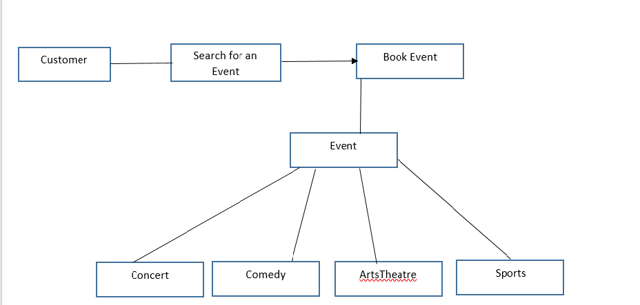
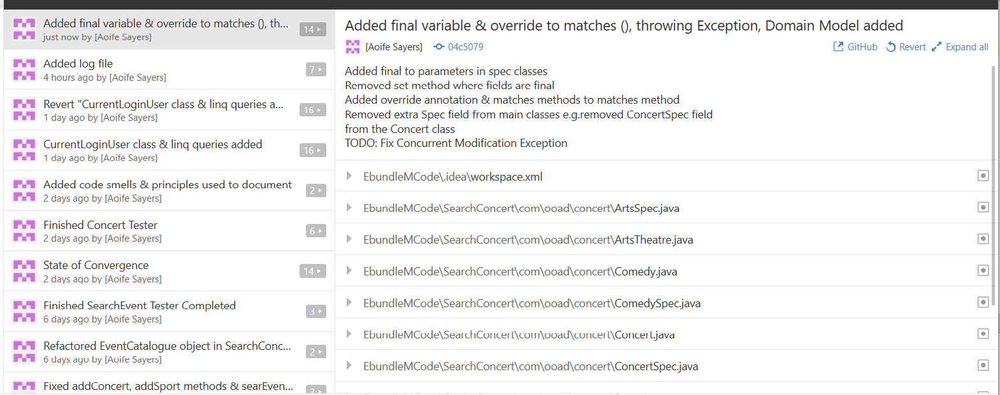
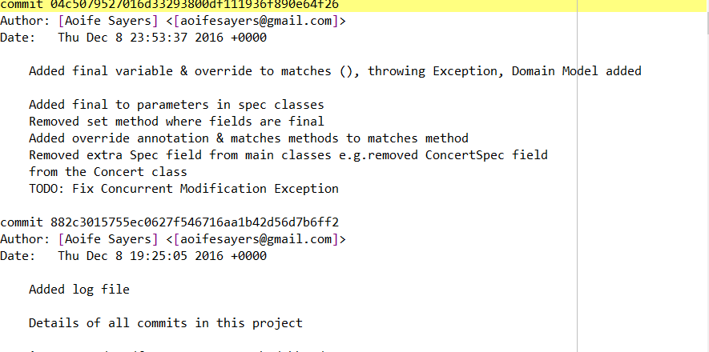

Aoife's Report
Aoife Sayers
T00170881
Computing with Multimedia
Project Title
Ebundle Master
Vision Statement
An e-ticketing system that allows customers to purchase concert and
performance tickets, select date and location of concert, purchase
ticket.In addtion the system offers bundles to customers which
allows them to search for transport such as bus and train, hotel
room and restaurant.
Domain Model

Link to individual github repository
My individual branch was the ABranch located at
https://github.com/AoifeNicAntSaoir/EbundleMaster1.1/tree/ABranch
Link to group github repository
The master branch is located at
https://github.com/AoifeNicAntSaoir/EbundleMaster1.1
Snapshot of your own detailed code commit comments

Git Log file from the a branch
Please see t00170881.txt for the full log

Snapshot of merged commits
Initial Code Smells Identified
- Type Safety Issues
- Resolved by using Generics e.g. in lists List <EventSpec>
- Casting - for strong type checks at rutinme e.g. - (ConcertSpec)eventSpec;
- Value Safety Issues & Primative Obsession
- Resolved by using enums - Venue, SportsType, Genre, ArtsType - Define a set of valid values
- Feature Envy & Coupling Issues
- Unreadable Code
- Too many if statements and code never gets exercised
- Poor Naming Conventions
- Unreadable variable names - refactored and safely renamed each variable
- Dependency Injection Principle
- Temporary Fields
- Initially had a temporary field inside the for loop so I changed the for loop to an Enhanced for loop
- Indecent Exposure & Encapsulation
- Initially had too many attributes as public & the parameters in lower level were not finalised
- To resolve this, I decided to encapsulate the fields/attributes in each of the classes to private access. They can be accessed by get & set methods
- I also finalised the parameters in the lower level Spec classes as they do not extend to more classes
- I made the matches method private in the SearchConcertTester so that it can only be called in that class
- Large Class & Long Methods
- Tester class was initially too long - realised I needed a Catalogue class for some of the functionality
- Duplicate Code & Long Parameter Lists & Shotgun Surgery
- Initially had duplicate code each of the Spec classes ie. ConcertSpec, ComedianSpec, SportsSpec, ArtsSpec classes - made for very long parameter lists when typing out
- Decided to implement an upper abstract class - EventSpec as a upper level class to model the classes below it
- Each of the Spec classes extend from Event Spec class
- Lower level spec classes define their own attributes as well as the upper level EventSpec class. For example ConcertSpec has it's own genre of type Enum,
ConcertSpec has a comedian of type String etc.
Principles Used
- DIY - Do It Yourself!
- S.O.L.I.D Principles
- S - Single-responsibility principle: A class should only have one reason to change
- O - Open-closed principle: A class should be easily extendable without modifying the class itself
- L - Liskov subsitution principle: Subclasses should be substitutable for their base class
- I - Interface segregation principle: Classes should not be forced to implement interfaces they don't use
- D - Dependency Inversion principle: Entities must depend on abstractions not on concretions
- Encapsulation
- Abstraction
- Interface segregation principle
Evaluation
- Agile Methodology to creating this project
- Good communication with team members
- Please note I have also added the fully dressed use cases to a github page located at https://aoifenicantsaoir.github.io/